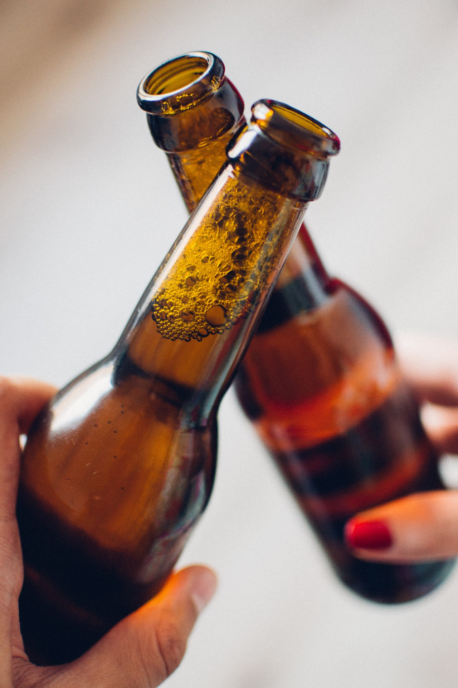

Did you know that in New Zealand it is approximated about 57%
of 15-17-year old's drink? Or that some teenagers are drinking as much as
two boxes of alcohol on one occasion? Teenage drinking
is rising at an alarmingly high rate, causing many teens to grow up
with a hazardous drinking problem. So why do teens drink? How
does it affect them? And how should we individually and as a
community help stop this?
Why do teenagers drink? Is it to act cool? To show off? Or is it
the environment they’ve grown up in? One of the main reasons of
underage drinking, is the influence of other people around them.
 Most of this includes growing up in a household where drinking
may be a usual or obvious activity, such witnessing their parents
come home every night and drink a bottle of beer. Something as
simple as that can later in life cause a big problem. Another
influence may be seeing their friends drink and wanting to
participate in the act being ‘cool’ or ‘fitting in’. Another main
reason why some teenagers may want to drink is stress, anxiety or
depression. As it is known our teen years are quite busy and
stressful years in our life, not only is our body changing but our
personalities, likes, dislikes, our perception of viewing different
things, takes a toll on many kids, and then if you include school,
everything is one giant headache. This is a reason why many
teens turn to drugs and alcohol for an unhealthy outlet of all these
problems.
How does it affect us? A young person’s body is more vulnerable to alcohol than an adult. The reason
being that in our teenage years our brains are still developing, drinking during this critical growth period
can cause lifelong brain damages, like irreversible memory loss and wet brain. When someone gets drunk
the alcohol in their body causes nerve cells, in their brain to slow down, this is what causes staggering,
slurred speech, blurry vision and a lack of motor skills. A lack of motor skills can be
extremely dangerous, the reason being that, it affects your coordination, speed, accuracy and responsive
time. All of these being affected is extremely dangerous. Some of these are what causes death
from drunk driving. Due to puberty, teenagers have a natural tendency to take risks and experiment while
being drunk. Doing this can put them in a dangerous or vulnerable position. Therefore, teenagers are
more likely to do something illegal or be more aggressive to others than grown up drinkers.